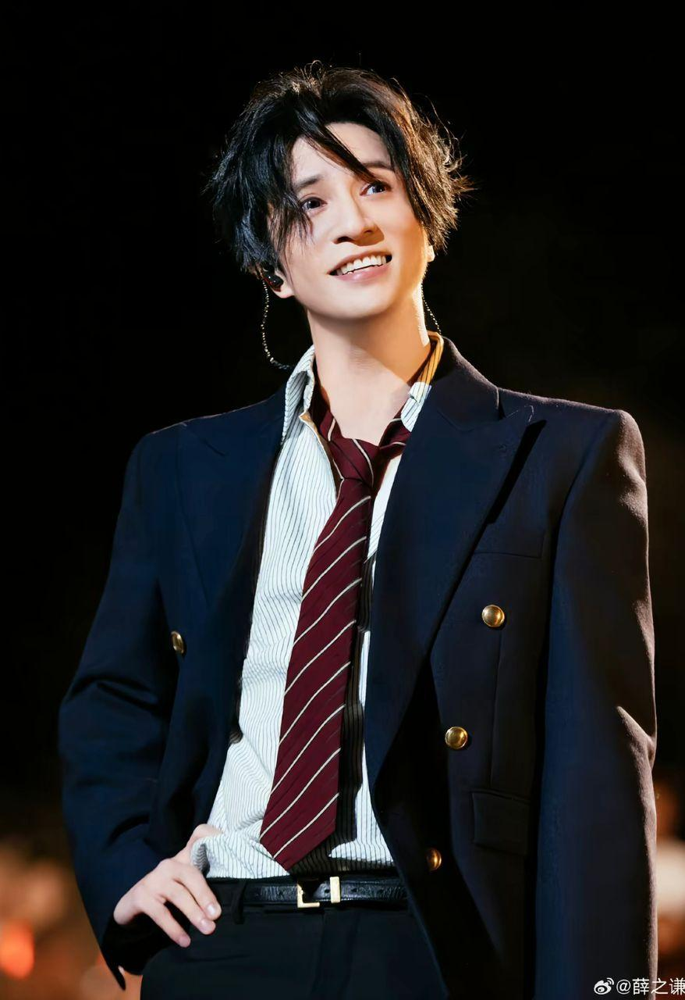
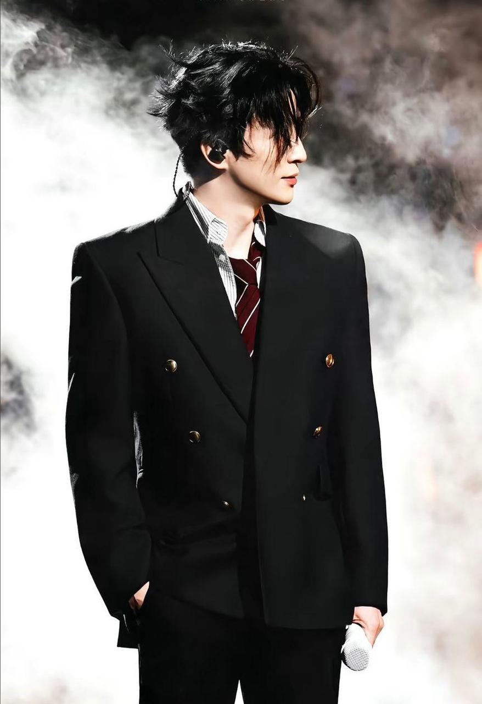

Joker Xue (薛之谦) was born on July 17, 1983, in Shanghai, China. He is a well-known Chinese singer and songwriter. He became famous in 2006 after joining a talent show called My Show. One of his popular songs is “Serious Snow.” Many people like his music because his songs are emotional and meaningful, and he writes many of his own songs.
Joker Xue is also known for having good character and treating people kindly. He once said that his wish is world peace. Besides music, he has his own business, including a hotpot restaurant. Another,He has performed in hundreds of concerts worldwide, including more than 145 shows during his Extraterrestrial World Tour.